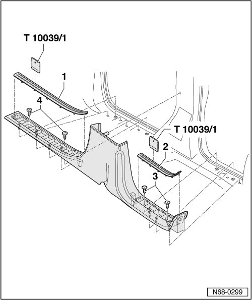

Scuff Plate: Service and Repair
Sill Panel Strip
• Removal and installation is described for the right-hand side of the vehicle. Removal and installation for the left-hand side is performed in the same manner.
Removing
- Remove B-pillar trim --> [ B-Pillar Trim ] B-Pillar Trim.
- Pry trim - 1 - and - 2 - out of sill panel strip using wedge (T10039/1).
- Remove the two bolts - 3 -.
- Remove the two bolts - 4 -.
- Pull sill panel strip out of mountings in sill panel and out of door seal beading.

Installing
- Perform the steps used for removal in reverse order.
• Before installing, inspect the securing clips for damage and replace if necessary.